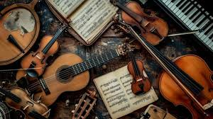

Classical music

Classical music
Melody:
A central feature, melodies in classical music can vary from simple and lyrical to complex and intricate, often serving as the main theme of a composition.
Harmony:
The combination of different musical notes played simultaneously. Harmony enriches the texture and emotional impact of music.
Rhythm:
The organization of sound in time, rhythm provides structure and flow. Classical music features a variety of rhythmic patterns, from steady beats to complex syncopation.
Dynamics:
Refers to the variations in loudness throughout a piece. Dynamics can dramatically affect the mood and intensity of music.
Hindusthani music
Hindustani music is one of the two major traditions of Indian classical music, primarily associated with North India. It is known for its improvisational style, intricate melodic structures, and rich rhythmic patterns. Here’s an overview of its key elements, forms, historical context, and cultural significance.
Raga:
The fundamental melodic framework of Hindustani music, a raga is a specific set of notes with prescribed rules for their usage. Each raga is associated with particular moods, times of day, or seasons, and serves as the foundation for improvisation.
Tala:
The rhythmic aspect of music, tala is a cycle of beats that structures a performance. It governs the timing of the music and can be quite complex, with common talas including Teentaal (16 beats), Jhaptal (10 beats), and Ektaal (12 beats).
Improvisation:
A significant aspect of Hindustani music, improvisation allows musicians to explore and express their creativity within the framework of a raga. Musicians often improvise elaborate passages, showcasing their technical skill and emotional depth.